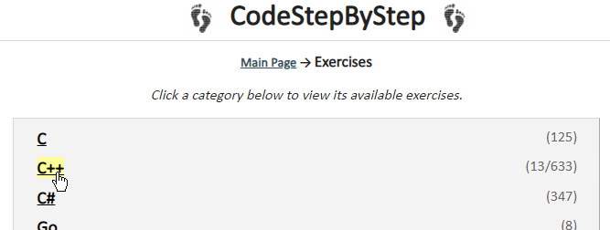

Try It Out
On the Canvas course home page, you’ll find a link to Code Step-by-Step, a Web site providing practice problems in several different programming languages, including C++. Go ahead and create your own account, and then let’s walk through a problem.

Click the C++ link as shown in the screenshot above, and then find the recursion section. Here are the instructions for the first problem, collapseSequences.
Write a recursive function named collapseSequences that accepts a string s and char c as parameters and returns a new string that is the same as s but with any sequences of consecutive occurrences of c compressed into a single occurrence of c. For example, if you collapse sequences of character 'a' in the string "aabaaccaaaaada", you get "abaccada".
Your function is case-sensitive; if the character c is, for example, a lowercase 'f', your function should not collapse sequences of uppercase 'F' characters. In other words, you do not need to write code to handle case issues in this problem.
The following table shows two examples and their expected return values:
| Call | Returns |
|---|---|
| collapseSequences("aabaaccaaaaaada", 'a') | "abaccada" |
| collapseSequences("mississssipppi", 's') | "misisipppi" |
 This course content is offered under a
CC
Attribution Non-Commercial license. Content in this course
can be considered under this license unless otherwise noted.
This course content is offered under a
CC
Attribution Non-Commercial license. Content in this course
can be considered under this license unless otherwise noted.